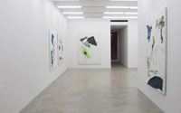
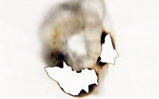

Collaborations
Exhibitions
News
Info
CURRENT
New Traditionalists
Organized by Mary Grace Wright
Justin Adian, Jess Fuller, Leif Ritchey, B. Wurtz
March 22 – April 21, 2012
UPCOMING
Dallas Art Fair
April 13 - 15, 2012
Nada NYC
May 4 - 7, 2012
ARCHIVE
God Dies
Servane Mary
February 16 – March 17, 2012
III
Robin Cameron, Elaine Cameron-Weir, Rochelle Goldberg
February 16 – March 17, 2012
Ryan Foerster/Ben Schumacher
January 12 – February 11, 2012
Advertisement
Bozidar Brazda
November 17 – December 23, 2011
Aaron Bobrow – Jo Nigoghossian – Grayson Revoir
Organized by Matt Moravec
October 13 – November 12, 2011
WE BEGIN WITH THE NOISE
Davina Semo
September 8 – October 8, 2011
The 2011 Bridgehampton Biennial
Organized by Bob Nickas
Summer Location – Bridgehampton, NY
July 9 – September 5, 2011
Colin Snapp/Daniel Turner
June 30 – July 29, 2011
We Regret To Inform You There Is Currently No Space Or Place For Abstract Painting
May 19 – June 18, 2011
The Feral Child Has No Use For Art
Caroline Snow and Bozidar Brazda
April 7 – May 7, 2011
Just Photography
Presented by Ancient & Modern, London
March 1 – April 2, 2011
Trove
Alan Kane
Presented by Ancient & Modern, London
March 1 – April 2, 2011
Mark Borthwick
February 4, 2011

Chameleon Jeans
Leif Ritchey
January 14 – February 19, 2011
Us and Them
Organized by Parinaz Mogadassi
Jules Marquis and P Smith
December 16, 2010 – January 8, 2011
Press Release
Curated by Matt Moravec
Brendan Lynch, Dominic Nurre, Kyle Thurman, Daniel Turner
November 18, 2010 – January 8, 2011
Wait For Me at the Bottom of the Pool
Organized by Bob Nickas
Summer Location – Bridgehampton, NY
August 14 – September 12, 2010

Ben Berlow/Graham Caldwell
Organized by Bob Nickas
February 4 – March 13, 2010
Personas
Curtis Mitchell
October 29 – December 5, 2009
Group Show at 515 Broadway
Organized by Bob Nickas
Lisa Beck, Ben Berlow, Graham Caldwell,
Xylor Jane, Jacob Kassay, David Malek
April 18 – May 9, 2009